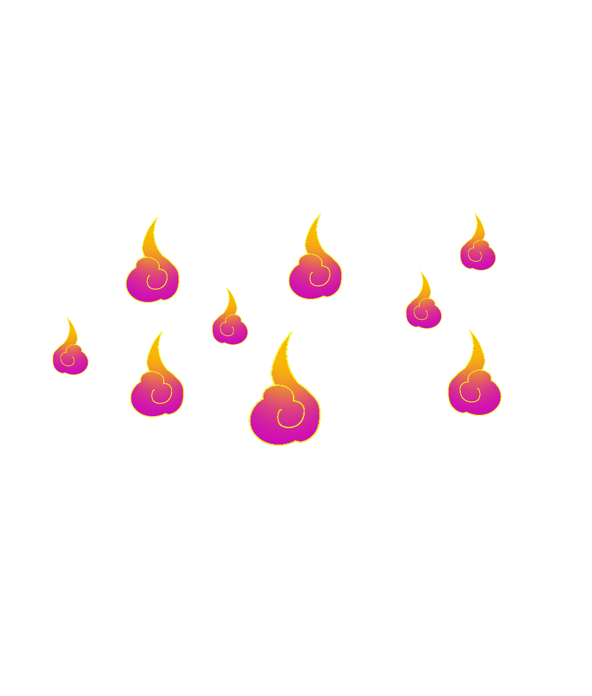
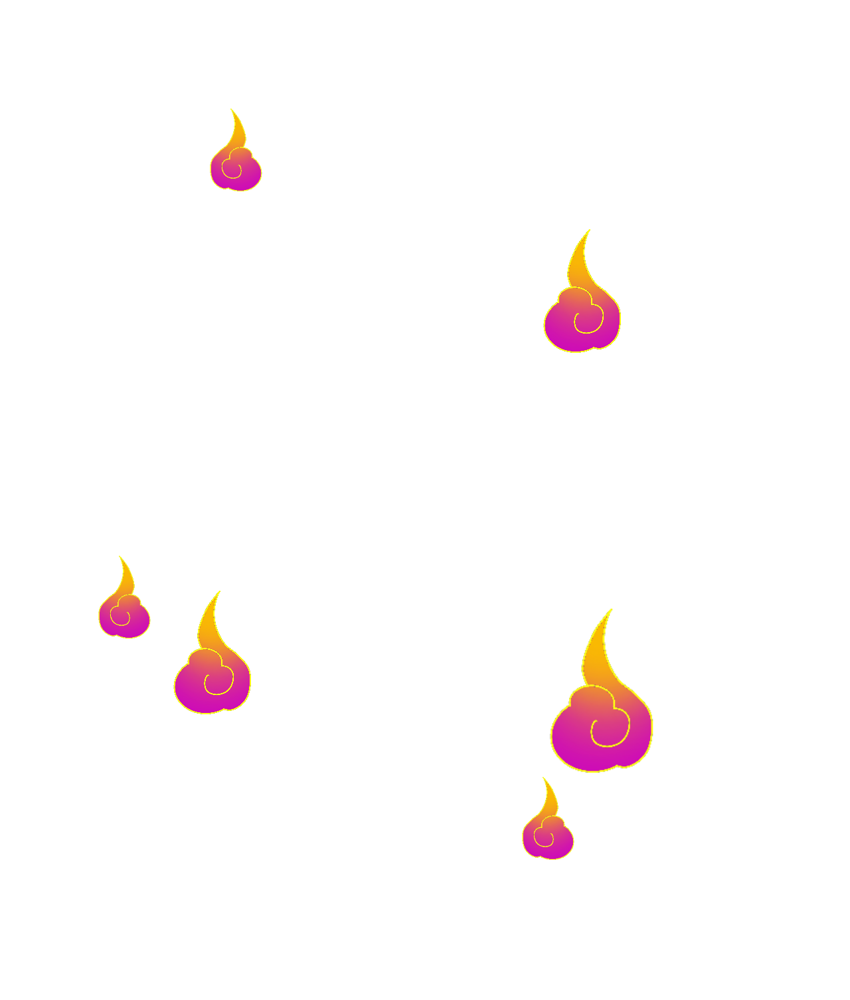
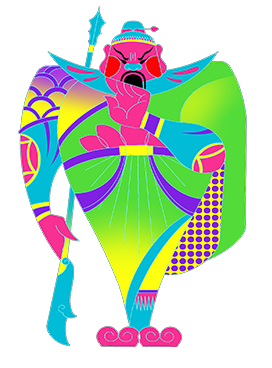
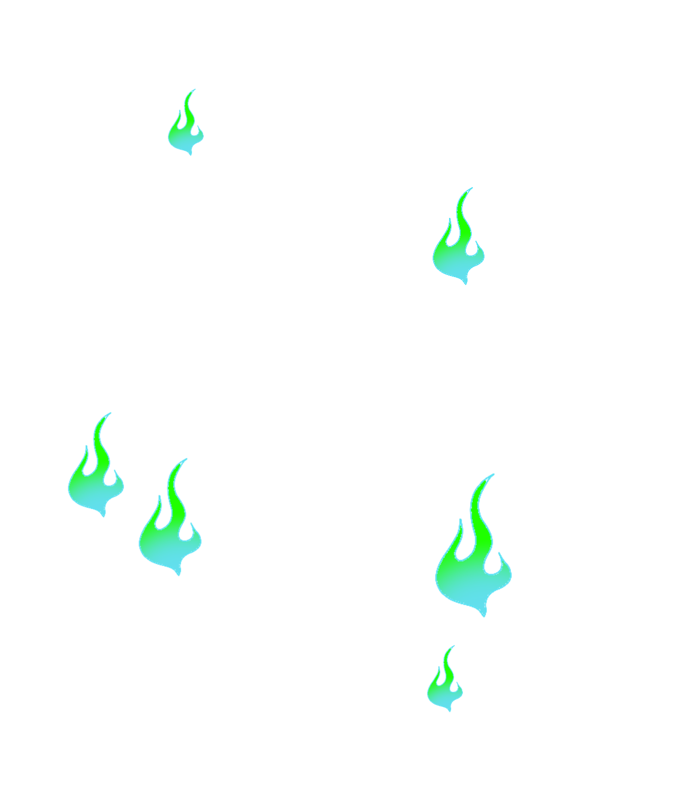
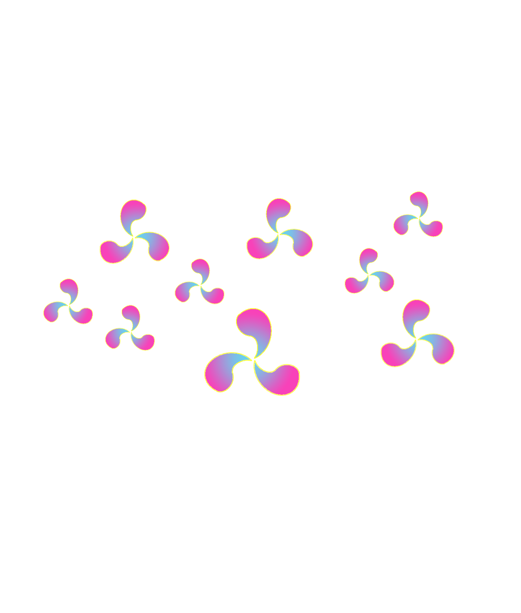
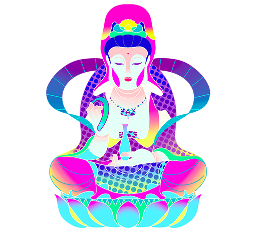
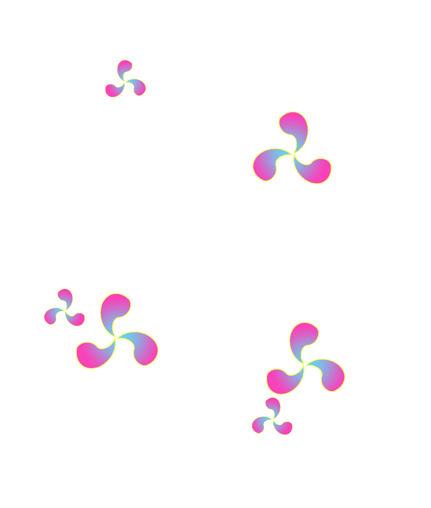

-


Buddha
如来
如来佛一般是指释迦牟尼佛。如者真如也，乘真如之道从因来果而成正觉之故，名为如来。是真身如来也。
又乘真如之道来三界垂化之故，谓之如来。是应身如来也。又如诸佛而来，
故名如来。法身无相，不能为众生所见，为化益众生故，如来示现报身与应身。
返回
-


Guanyu
关羽
关公乃亘古一人的正气道德楷模，关公精神“忠义仁勇、大公无私、乾坤正气”，上至皇权下至黎庶，千秋百代世所敬仰。
无他已，赤胆忠心。
返回
-



Wenshu
文殊
文殊开示：“我于过去劫中，因念佛故，得一切种智。一切诸法、般若波罗蜜、甚深禅定，乃至诸陀罗尼门，皆从念佛而生。”
系缘一法，不取于相，专念佛号
返回